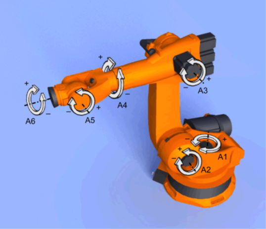
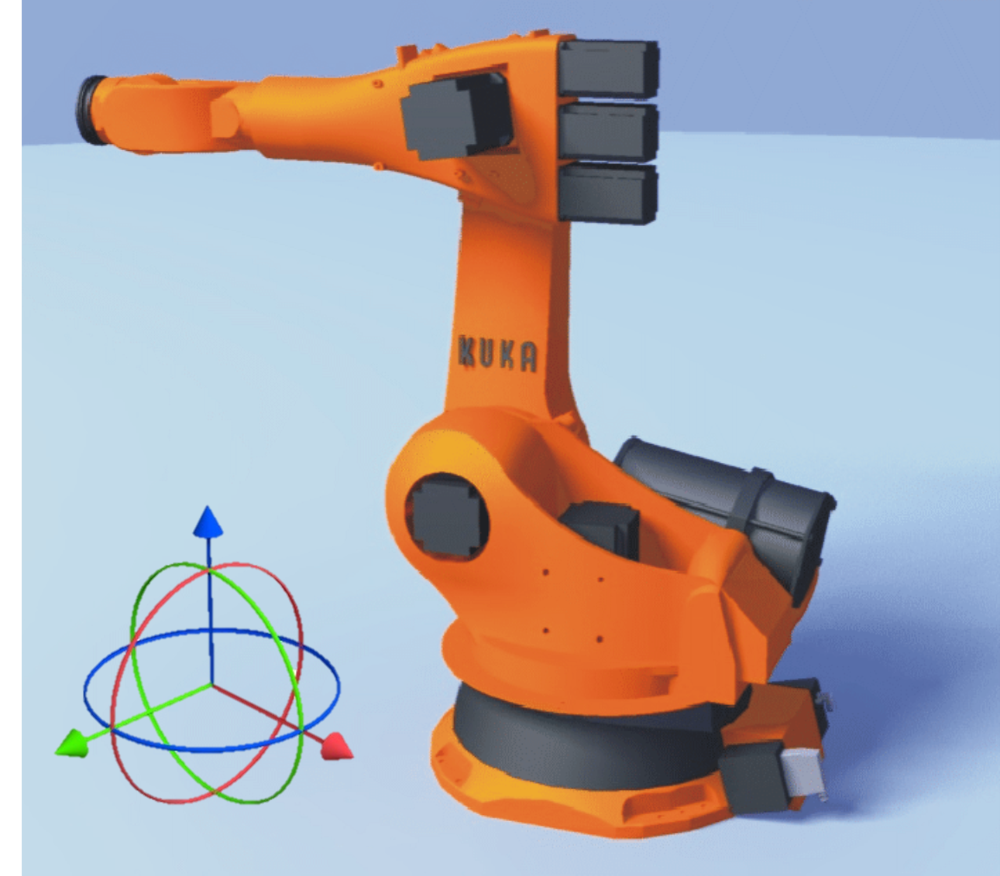
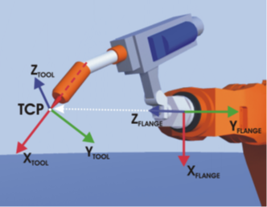
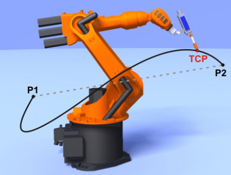
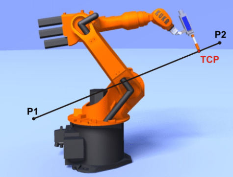
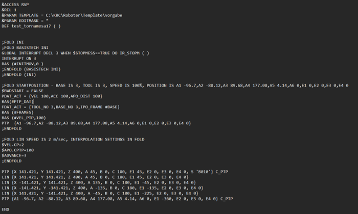
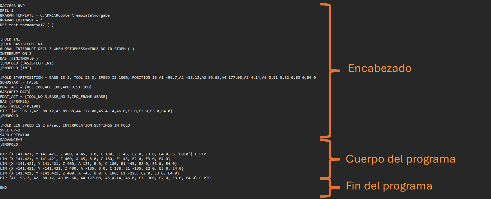

My Blog
PRC 101
11/07/2024
Robotica Creativa
Descargo de responsabilidad:
LAHV Design es un proyecto personal sin fines de lucro, todos los recursos (redactados y/o descargables) aquí compartidos son libres de uso, sin embargo no me hago responsable de ninguna manera de las decisiones que terceros tomen con dicho recuso.
Introducción
En mi experiencia como ingeniero he tenido la oportunidad de poder desarrollar métodos no convencionales para fabricar objetos, para el ejemplo de este articulo el maquinado de 7 ejes de un busto usando manufactura sustractiva.
Durante la cuarta revolución industrial se comenzó a enfatizar el uso de equipos de fabricación masiva por medio de la automatización de los procesos industriales.
Pero ¿Dónde quedan los makers en esta ecuación de la industria 4.0? te preguntaras.
Bueno pues desde hace un tiempo ya las comunidades abiertas de makers a lo largo y ancho del mundo han logrado hacerse con equipos industriales y han hecho su “magia” con ellos adaptándolos y hackeándolos para que en lugar de hacer una operación una y otra vez puedan hacer cosas únicas y cada vez más creativas, así como compartiendo sus conocimientos adquiridos con el resto del mundo.
Bajo esta bandera de libertad creativa es que nace una organización llamada “robots in architecture” que pone a disposición de una comunidad de miembros un software llamado kuka PRC que facilita abre la creación de programas de robots marca kuka a un entorno de programación visual muy popular y con una comunidad cada vez más creciente llamado grasshopper.
Aquí es donde un servidor encuentra espacio para desarrollar aplicaciones de robótica en un entorno creativo/educativo.
Grasshopper (GH) comenzó como un plug-in para el software de modelado de la empresa MCneel llamado rhinoceros 3D, el cual por si solo es un paquete de CAD no paramétrico, muy potente y versátil, tanto para la frabricacion digital y cuenta con un motor de renderizado básico, sin embargo, al añadirle el entorno de trabajo de grasshopper, rhinoceros se vuelve entonces en un modelador paramétrico, donde se pueden cambiar los valores del diseño en tiempo real. Sin tener que volver a remodelar desde el principio.
En esta serie de artículos ya no tocaré tan a fondo, temas de Grasshopper, sino que me enfocaré más en los componentes propios del componente KUKA|PRC enfocado en control paramétrico de robots de 6 ejes usando el entorno de programación visual de GH.
Primero que nada, debemos tener conocimientos en modelado de CAD como para poder entender algunos conceptos básicos como la generación de curvas y superficies con NURBS, transformación de estos objetos, mover, rotar, escalar, después deberíamos contar con conocimientos muy básicos en programación, no es necesario nada exagerado y de bajo nivel como ensamblador, solo necesitamos entender la lógica detrás de un algoritmo de programación, condiciones “IF”, jerarquías de operaciones, errores de lógica contra errores de sintaxis, Etc.
Grados de libertad
Primero toca un poco de teoría de robots y código G. El brazo robótico utilizado durante este articulo será uno instalado en La universidad Anáhuac campus Querétaro que es marca KUKA y modelo KR120-R2700-2 este equipo cuenta con 6 ejes y un controlador KRC-4 que permite controlar los brazos de esta marca a través de un lenguaje llamado KRL (KUKA Robot Language). Este lenguaje, aunque es patente de la marca del brazo robótico es un lenguaje muy similar en sintaxis a cualquier codigo G de otra compañía, sin embargo, si nunca hemos tenido un acercamiento a maquinado CNC es un poco intimidante).
Aunque el brazo robótico cuenta con 6 ejes estos no ejemplifican lo que significa 6 DOF o grados de libertad por sus siglas en ingles.
Cada Eje esta unido Mecánicamente por tornillos a un Servomotor industrial que le da su ángulo de rotación y estos se denominan A (de AXIS) y se numeran en orden ascendente desde la base del robot por lo general, anclada al piso de la instalación.
Estos se refieren a los ejes cartesianos y sus movimientos dentro de este.
Un eje cartesiano tiene 3 direcciones X, Y y Z respectivamente pero así mismo podemos usar cualquiera de los ejes y usarlo como centro para definir una rotación A, B y C.
 TraslaciónMovimientos Rectilíneos a lo largo de los ejes X, Y o Z.
RotaciónMovimientos Angulares sobre los Ejes Cartesianos asociados a estos de la siguiente Manera
- Z = A
- Y = B
- X = C
Sistemas de coordenadas
En definición general es un sistema de referencias para poder localizar un punto en el espacio.
Los brazos robóticos de Kuka tienen 5 sistemas de coordenadas.
- $ROBROOT
- Sistema de coordenadas definidas por el operador la cual localiza el sismtea de cooredenadas de referencias del entorono de trabajo del robot. Esto localiza con el sistema de coordenadas WORLD
- $WORLD
- Sistema de coordenadas definido por la cinemática interna del modelo del robot la cual está localizada por defecto en el centro de la base del eje A1 del robot.
- $FLANGE
- o Sistema de coordenadas definido por la cinemática interna del modelo del robot. Y su origen cartesiano se encuentra en el centro de la brida del eje A6.
- $TOOL
- o Es un sistema de coordenadas modificado por el operador cuyo origen se encuentra en el centro de la brida del eje A6.
- $BASE
- o Sistema de coordenadas cartesianas modificada por el operador que describe la posición de la pieza a ser manipulada por el robot. Hace referencia al sistema de coordenadas WORLD.
Sin embargo, cuando colocamos un 7mo eje como una tornamesa ó mesa giratoria crearemos algo llamado cinemática Externa, ya que la posición Y orientación del origen cartesiano de la base de la tornamesa rotará con respecto al $EASYSROBROOT.
 TCPPlano coordenado de la herramienta por sus siglas en ingles tool coordinate plane.Definido anteriormente como $TOOL
Tipos de movimientos
El brazo robótico tiene 4 tipos de instrucciones de movimiento en su sintaxis sin embargo para usos prácticos solo definire 2 de estos que son los más usados comúnmente.
Movimiento point to point PTPEl robot desplaza el TCP al punto de destino a lo largo de la trayectoria mas rápida.
NOTA: La trayectoria mas “RÁPIDA” no es la trayectoria más “CORTA” y por lo tanto no es una línea recta.Sin embargo, esto puede generar rotaciones en el ángulo de ataque del TCP sobre la pieza.Y no se puede predecir la trayectoria exacta que el robot realizará para alcanzar la posición definida por el operador.  Movimiento LinealEl robot mueve el TCP hacia el destino trazando una línea recta desde el origen del movimiento (usualmente la instrucción de movimiento anterior)

Sintaxis de un programa de KRL
Ahora analicemos la estructura de un código de krl.
Lo primero que notaremos es que los programas se ejecutan en un formato nombrado .SRC sin embargo si usamos Windows podremos tener acceso al código desde bloc de notas.
Este es un ejemplo de código SIN tornamesa. Donde el robot deberá seguir 4 puntos definidos por el usuario.
Primero dividiremos el programa en sus componentes.
El encabezado es una sección del código donde se definen cosas como el nombre el programa, las variables del sistema que lo esta ejecutando, protocolos de comunicación, etc.
La línea que comienza con “; FOLD INI” significa que lo que sigue son instrucciones dentro de una “carpeta” llamada ini.
Dentro de INI podemos declarar cosas como el nombre y estado de las salidas digitales a la hora de comenzar el programa.
Dentro del FOLD STARTPOSITION encontraremos el numero de la base y herramienta a usar la velocidad de reproducción general del programa, la localización del “HOME” del programa, la velocidad del movimiento PTP.
Por último, en esta sección encontramos un FOLD específico para definir la velocidad y aceleración de los motores durante las instrucciones LIN.
En la sección nombrada como cuerpo del programa.Encontraremos,El algoritmo generado por el operador del robot. Estos pueden ser alguno de los tipos de movimientos descritos anteriormente, pueden ser instrucciones lógicas como condiciones “IF”, o cambios de estados de variables, como encender/apagar el actuador final, instrucciones de espera de tiempo “wait” o instrucciones de espera de entrada de variable “wait for”.
Hemos llegado al final de este artículo, como siempre espero que hayas encontrado útil este articulo y su contenido.
© Your Site Name. All Rights Reserved. Designed by HTML Codex